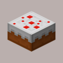
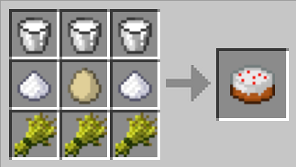

cake

Description
Cake is a food block that can be eaten by the player. Once placed, cake cannot be recollected.
Unlike most foods, cake cannot be eaten as an item in the hotbar. Before being eaten,
it must first be placed on top of a block.
To eat from a placed cake, click on the cake with use button. Each cake has seven "slices",
and each use will consume one slice. A single slice restores 2 hunger and 0.4 hunger
saturation. Eating all seven slices of a cake restores 14 hunger and 2.8 hunger saturation.
Unlike the eating of other foods, eating a slice of cake is instantaneous (an entire cake
can be eaten as fast as it can be clicked) and makes no sound. Multiple players can eat
from the same cake at the same time.
